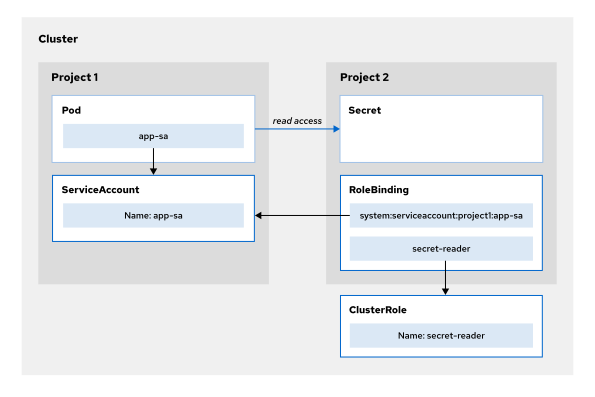

8. Application Security
1. Security Context Constraints (SCC)¶
简单来说，SCC 是 OpenShift 用来限制容器行为的一种机制，确保集群中运行的容器符合安全标准。SCC 定义了 Pod 的以下安全行为：
- 是否允许特权容器：是否允许容器以 root 用户身份运行，或以更高的权限访问主机。
- 容器能否运行在主机网络上：是否允许容器使用宿主机的网络。
- 用户和组的限制：容器是否能使用特定的用户、组或 UID。
- 是否允许访问特定资源：如是否允许访问主机路径、允许卷挂载等。
Cluster administrators can list the SCCs that OpenShift defines:
oc get scc
OpenShift provides the some default SCCs such as anyuid and restricted-v2. To get detail of one scc:
oc describe scc anyuid
Most pods that OpenShift creates use the restricted-v2 SCC, which provides limited access to resources that are external to OpenShift.To view the scc that a pod uses:
oc describe pod console-5df4fcbb47-67c52 -n openshift-console | grep scc
Warning
SCC 通过 ServiceAccount 作用于 Pod，而Role/ClusterRole 作用于 User 和 API 资源。
Use cases: when to switch SCC
- A container image(from DockerHub) that requires running as a specific user ID can fail because the
restricted-v2SCC runs the container by using a random user ID. - A container image that listens on port 80 or on port 443 can fail for a related reason. The random user ID that the
restricted-v2SCC uses cannot start a service that listens on a privileged network port (port numbers that are less than 1024)
⚠️ 这条命令列出了在当前配置下，系统允许该资源（deployment/nginx）使用的 SCC 列表 - 并不代表该 deployment 已经在用这个 SCC 了！
oc get deployment nginx -o yaml | oc adm policy scc-subject-review -f -
RESOURCE ALLOWED BY
Deployment/nginx anyuid
- Deployment/nginx：我们检查的是这个 Deployment。
- anyuid：这个 Deployment 所使用的服务账号（ServiceAccount）被允许使用 anyuid SCC
oc policy scc-subject-review
# Check whether user bob can create a pod specified in myresource.yaml
oc policy scc-subject-review -u bob -f myresource.yaml
# Check whether user bob who belongs to projectAdmin group can create a pod specified in myresource.yaml
oc policy scc-subject-review -u bob -g projectAdmin -f myresource.yaml
# Check whether a ServiceAccount specified in the pod.template.spec in myresourcewithsa.yaml can create the pod
oc policy scc-subject-review -f myresourcewithsa.yaml
Switch SCC¶
-
create
serviceaccountoc create serviceaccount my-sa -
associate
serviceaccountwith an SCCPS: if assign SCC to a User, just do directly without# Identify a serviceaccount by using the -z option oc adm policy add-scc-to-user <SCC-NAME> -z my-sa-zflag:oc adm policy add-scc-to-user restricted user1 user2 -
Change an existing deployment to use the
serviceaccountoc set serviceaccount deployment/deployment-name my-sa
常见的 SCC¶
| SCC名称 | 描述 | 权限 |
|---|---|---|
restricted |
限制性配置，适用于大多数用户，确保最低权限 | 不允许使用特权容器、特权操作、运行用户为 root，默认的容器运行时用户是一个非 root 用户。 |
privileged |
允许容器以 root 权限运行，适用于需要特权的容器 | 容器具有完全的权限，可以访问宿主机的内核空间和硬件。适用于需要 root 权限的应用程序，如 Docker 守护进程。 |
anyuid |
容许容器使用任何 UID，适用于需要特定 UID 的应用程序 | 容器可以运行作为任何用户，而不仅仅是默认的非 root 用户。允许容器以 root 或其他用户身份运行。 |
nonroot |
容许容器作为非 root 用户运行，避免使用 root 用户 | 容器必须以非 root 用户身份运行，避免 root 权限的使用。 |
hostaccess |
允许容器访问主机资源，如网络或文件系统访问，适用于主机管理容器 | 容器能够访问宿主机的主机网络和文件系统资源，适用于需要直接与宿主机交互的应用程序。 |
docker |
为 Docker 守护进程配置的特殊 SCC | 允许容器使用 Docker 守护进程的特权进行容器操作。 |
2. Access to Kubernetes APIs¶
With the Kubernetes APIs, a user or an application can query and modify the cluster state. To protect your cluster from malicious interactions, you must grant access to the different Kubernetes APIs. Role-based access control (RBAC) authorization is preconfigured in OpenShift. An application requires explicit RBAC authorization to access restricted Kubernetes APIs.
serviceaccount
A serviceaccount is a Kubernetes object within a project. The service account represents the identity of an application that runs in a pod. To grant an application access to a Kubernetes API, take these actions:
- Create an application service account.
- Grant the service account access to the Kubernetes API.
- Assign the service account to the application pods.
⚠️ If the pod definition does not specify a service account, then the pod uses the default service account.
Who needs extra access to k8s API?¶
For regular workloads, default service account is enough, but in some "infrastructure cases" we might need extra access to monitor/modify cluster resources:
- Monitoring Applications: need read access to watch cluster resources - such as Red Hat Advanced Cluster Security (ACS)
- Controllers: Controllers are applications that constantly watch and try to reach the intended state of a resource - such as ArgoCD
- Operators: Operators automate creating, configuring, and managing instances of Kubernetes-native applications. Therefore, operators need permissions for configuration and maintenance tasks - such as a database operator
How to get the correct access to k8s API?¶
- create role/clusterrole:
写yaml文件
或者用命令行：
apiVersion: rbac.authorization.k8s.io/v1 kind: ClusterRole metadata: name: secret-reader # role name rules: - apiGroups: [""] # The API groups, where an empty string represents the core API resources: ["secrets"] # The resources that the role refers to verbs: ["get", "watch", "list"] # The verbs/actions that the role allows the application to dooc create clusterrole secret-reader --verb=get,watch,list --resource=secret - bind role to serviceaccount
# role oc adm policy add-role-to-user <RoleName> -z service-account # clusterrole oc adm policy add-cluster-role-to-user <ClusterRoleName> -z service-account - assign
serviceaccounttopod
Accessing API Resources in a Different Namespace
Request: Pod in project-1 wants to read Secret in project-2
Background: you have an application pod in the project-1 project that requires access to project-2 secrets, then you must take these actions:
- Create an
app-saservice account in theproject-1project. - Assign the
app-saservice account to your application pod. - Create a role binding on the
project-2project that references theapp-saservice account and the secret-reader role or cluster role.create role-binding:# 如何引用另一个 project 中的 sa: system:serviceaccount:<namespace>:<serviceaccount-name>oc project project-2 oc adm policy add-role-to-user edit system:serviceaccount:project-1:my-sa

3. Job & CronJob¶
Basic knowledge about job and cronjob check here. One of the use case of cronjob is to schedule maintenance tasks in the cluster.
Note
Cluster maintenance tasks require privileged pods, whereas most applications might not require elevated privileges.
Job with dry run:
oc create job --dry-run=client -o yaml test \
--image=registry.access.redhat.com/ubi8/ubi:8.6 \
-- curl https://example.com
CronJob with dry run:
oc create cronjob --dry-run=client -o yaml test \
--image=registry.access.redhat.com/ubi8/ubi:8.6 \
--schedule='0 0 * * *' \
-- curl https://example.com
Schedule specificiation in CronJob
The schedule specification for Kubernetes cron jobs is derived from the specification in Linux cron job
# Example cron job definition:
# ┌───────────────── minute (0 - 59)
# │ ┌────────────── hour (0 - 23)
# │ │ ┌────────── day of month (1 - 31)
# │ │ │ ┌────── month (1 - 12) or jan,feb,mar,apr ...
# │ │ │ │ ┌── day of week (0 - 6) or sun,mon,tue,wed,thu,fri,sat
# │ │ │ │ │
# m h dom mon dow command
0 */2 * * * /path/to/task_executable arguments
⚠️ "dow"中，Sunday 是 0
Examples:
0 0 * * *: Run the specified task every day at midnight0 0 * * 7: Run the specified task every Sunday at midnight0 */4 * * *: Run the specified task every four hours0 * * * *: Run the specified task every hour0means the job will run at the 0th minute (the start of the hour)*runs every hour*runs every day of month (dom)*runs every month (mon)*runs every day of week (dow)
Cronjob with raw script¶
example:
apiVersion: batch/v1
kind: CronJob
metadata:
name: wordpress-backup
spec:
schedule: 0 2 * * 7
jobTemplate:
spec:
template:
spec:
dnsPolicy: ClusterFirst
restartPolicy: Never
containers:
- name: wp-cli
image: registry.io/wp-maintenance/wp-cli:2.7
resources: {}
command:
- bash
- -xc
args:
- >
wp maintenance-mode activate ;
wp db export | gzip > database.sql.gz ;
wp maintenance-mode deactivate ;
rclone copy database.sql.gz s3://bucket/backups/ ;
rm -v database.sql.gz ;
Note
The > symbol uses the YAML folded style, which converts all newlines to spaces when parsing. Each command is separated with a semicolon (;), because the string in the args key is passed as a single argument to the bash -xc command.
the yaml code above is equivalent to:
bash -xc 'wp maintenance-mode activate ; wp db export | gzip > database.sql.gz ; wp maintenance-mode deactivate ; rclone copy database.sql.gz s3://bucket/backups/ ; rm -v database.sql.gz ;'
/bin/sh -c VS bash -xc
| Feature | /bin/sh -c |
bash -xc |
|---|---|---|
| Flags | -c execute |
-cx execute with debug |
| Type | Lightweight shell (POSIX-compliant) | Advanced shell with extra features |
| Location | Usually /bin/sh (may point to different shells) | Usually /bin/bash |
| Scripting | Supports basic scripting | Supports advanced scripting (arrays, associative arrays, string manipulation, etc.) |
| Command History (history) | Not always available | Fully supported |
| Tab Completion | Minimal or none | Fully supported |
| Loops & Conditionals | POSIX standard | Extended syntax ([[ ... ]], == operator) |
| Process Substitution (<(cmd)) | Not supported | Supported |
| Array Variables (arr=(a b c)) | Not supported | Supported |
Cronjob with ConfigMap's script¶
- create
configmapwith the required script:
apiVersion: v1
kind: ConfigMap
metadata:
name: maintenance
app: crictl
data:
maintenance.sh: |
#!/bin/bash
NODES=$(oc get nodes -o=name)
for NODE in ${NODES}
do
echo ${NODE}
oc debug ${NODE} -- \
chroot /host \
/bin/bash -xc 'crictl images ; crictl rmi --prune'
echo $?
done
configmap to a cronjob
apiVersion: batch/v1
kind: CronJob
metadata:
name: image-pruner
spec:
schedule: 0 * * * *
jobTemplate:
spec:
template:
spec:
dnsPolicy: ClusterFirst
restartPolicy: Never
containers:
- name: image-pruner
image: quay.io/openshift/origin-cli:4.14
resources: {}
command:
- /opt/maintenance.sh
# Mounting the configuration map as a volume
volumeMounts:
- name: scripts
mountPath: /opt
volumes:
- name: scripts
configMap:
name: maintenance
defaultMode: 0555
Exercies notes¶
oc debug node/master01 -- \ # Starts a debug pod on the node master01.
chroot /host \ # Changes Root-Filesystem to /host, which gives access to the node’s actual file system.
crictl rmi --prune # Uses crictl (CRI-O CLI) to remove all unused images from the node.
crictl
Directly interacts with the container runtime (CRI-O), allowing you to manage containers and images at the node level.
-----¶
为什么即使已有 Role 仍然需要使用 SCC¶
Role 和 SCC (Security Context Constraints) 是两种不同的安全机制，它们各自控制 OpenShift 中的不同方面，因此它们是互补的，而不是互相替代的。下面详细解释为什么即使已经有了 Role，仍然需要使用 SCC。
1. Role 控制的是权限，SCC 控制的是容器的安全上下文¶
Role用来定义用户或 ServiceAccount 对集群资源（如 Pods、Services、Deployments 等）进行 访问控制 的权限。例如：- 允许用户创建或修改资源。
- 允许用户查看资源。
-
控制用户是否可以执行特定操作（如创建或删除 Pods）。
-
SCC用来定义容器在执行时 可以使用哪些特权，即容器的 安全上下文。它控制以下内容： - 是否允许容器以 root 用户 权限运行。
- 是否允许容器使用 特权模式（privileged mode）。
- 是否允许容器访问 宿主机网络 或 挂载宿主机文件系统 等资源。
- 控制容器是否使用特定的 SELinux 上下文 或 用户/组 ID。
2. Role 控制对资源的访问，SCC 控制容器的行为¶
-
Role更多的是控制谁可以 访问资源（比如读取、写入、修改、删除资源）。例如，给用户view权限表示他可以查看资源，但不允许修改。 -
SCC则控制容器在 执行时 是否符合某些安全要求。例如，容器能否在特权模式下运行，能否以root用户权限启动，能否挂载宿主机的目录等。这个主要关注容器的 行为安全性，而不仅仅是资源访问权限。
3. 为什么 Role 和 SCC 是互补的¶
Role定义了你是否可以执行某些资源的操作，而SCC则是定义了你在执行容器时，是否有足够的权限去使用某些敏感的特性（如特权容器、root 用户、宿主机网络等）。即使你有权限创建 Pod、修改 Deployment，如果没有适当的 SCC，容器仍然无法以所需的方式运行。
比如，如果你有权限创建 Pods（通过某个 Role），但是容器需要以 root 用户 运行，或者使用 特权模式，这时你就需要配置 SCC 来允许这些操作。
4. oc adm policy add-role-to-user vs oc adm policy add-scc-to-user¶
oc adm policy add-role-to-user： 这个命令将一个角色添加到某个用户（或 ServiceAccount）。例如，赋予用户对某个项目的读写权限。oc adm policy add-scc-to-user： 这个命令将一个 SCC 绑定到某个用户（或 ServiceAccount）。它决定了该用户运行的容器是否能以某种特权执行（例如是否允许以 root 用户身份运行容器）。
5. 例子¶
假设你有一个用户 developer，他需要运行一个容器来访问宿主机网络。
- Role： 你会用
oc adm policy add-role-to-user为developer分配edit权限，使他能够在项目中创建 Pods 和 Deployments。 - SCC： 但是如果
developer需要在容器中访问宿主机网络，OpenShift 默认的 SCC 可能不允许这样做，因为这种行为需要特权。你会使用oc adm policy add-scc-to-user为developer绑定privileged或anyuid等 SCC，使得容器能够在容器中以特权模式运行。
总结¶
Role控制访问权限，它决定了谁可以操作集群资源（如 Pods、Services）。SCC控制容器的 运行时权限，它决定了容器能否以特权模式运行，是否可以访问宿主机网络，是否可以以 root 用户身份运行等。
因此，即使有了 Role，你仍然需要为容器配置适当的 SCC 来确保容器能够按照需要的安全上下文执行。两者结合，确保了既能合理控制资源访问，又能确保容器运行时的安全性。